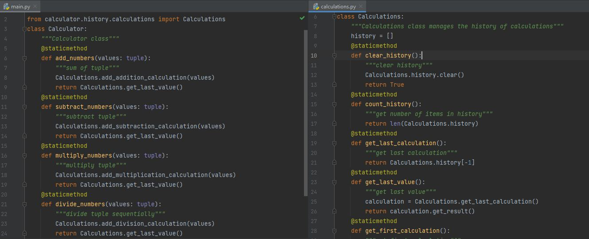
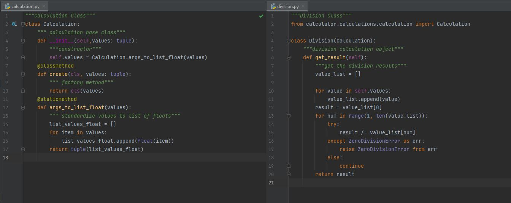
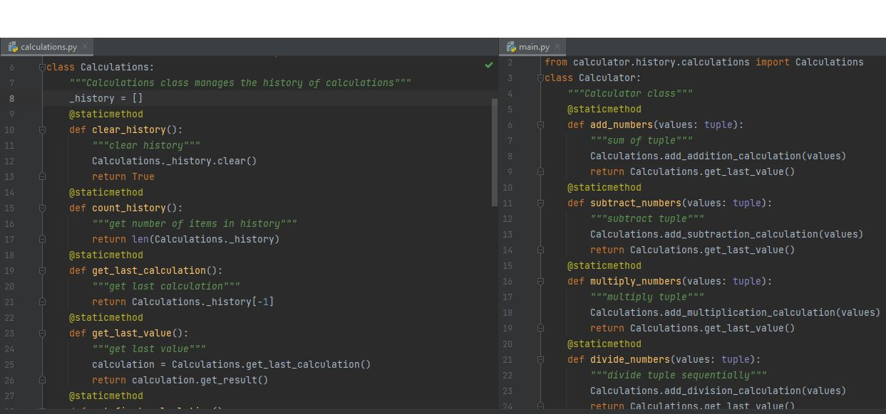
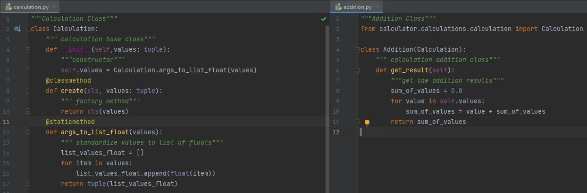

Introduction to Object Oriented Programming Concepts in Python
Inheritance
Inheritance is the capability of a class to obtain properties and characteristics from another class. A sub class is one that inherits properties from another class. A super class is one whose properties are inherited.
In this example from the calculator program, we can see an example of inheritance. The calculator class inherits the calculations class and has access to all of its methods. The calculations class inherits each one of the calculation sub classes which include addition, subtraction, multiplication, and division. Each of these classes inherits the calculation class. This program shows multiple layers of inheritance starting with the calculation class as the parent class and the calculator class is the lowest child class. Visit the branch for Inheritance here
Polymorphism
Polymorphism literally means to take many forms. In programming it refers to concept that different classes can be used with the same interface.
In the above image we will look at this calculator program again to see an example of Polymorphism. The calculation class is the base class for the addition, subtraction, multiplication, and division classes. Based on what operation they want to perform on a given tuple of values, the user can instantiate the proper object and use its functions.
Encapsulation
Encapsulation refers to the progamming style where implementation details, variables, and other attributes are hidden and protected to increase security.
One of the simplest ways of implementing Encapsulation would be to create variables, methods, or other attributes as private or protected. Protected variables are accessible only to classes derived from it and private variables are only accessible within the class. In the calculator example above, in the calculations class, the _history list is a protected variable, as denoted by the "_" underscore before the object name. Visit the branch for Encapsulation here
Abstraction
Abstraction is the concept of only showing essential attributes and hiding any unnecessary details from the user.
In the calculator example proram, the calculation class and its subclasses are an example of abstraction. The calculation class serves as the base for the addition, subtraction, multiplication, and division classes. If a user would use any of these classes, they would instantiating an object from the respective class wihout paying any concern to how the calculation base class functions. Visit the branch for Abstraction here